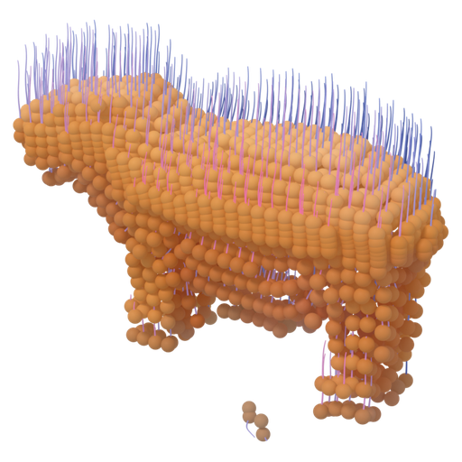
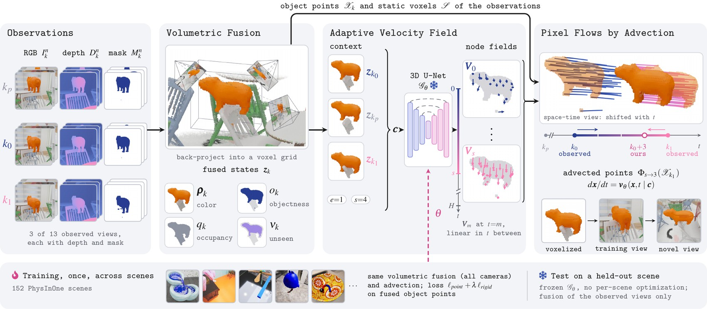
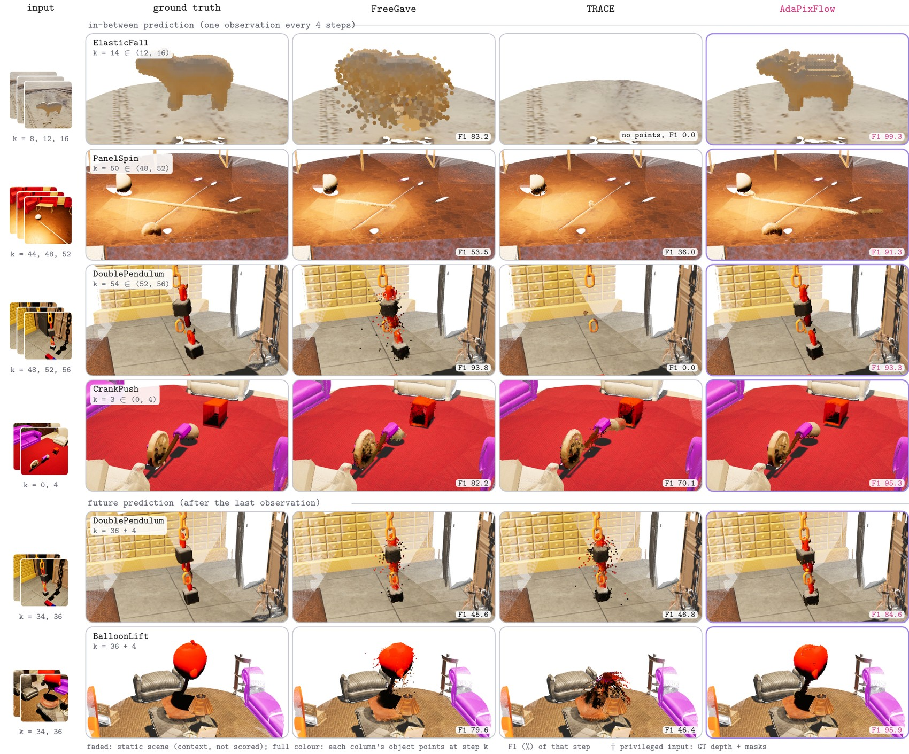

We learn one continuous-time dynamics operator across scenes. We fuse sparse multi-view RGB-D observations into a single voxel grid in world coordinates, predict a 3D velocity field from them, and advect the object pixels along it. This tells us where objects are between observations and after the last one. We train the operator once, and it runs on new scenes and datasets without per-scene optimization.

For a gap that starts at the observation \(k_0\), the context holds the fused states before, at and after the gap, a flag \(e\) that says whether the next observation exists, and the spacing \(s\). From it, the network predicts a velocity field, and every object point follows
We train the operator through the advection, comparing the advected points with the observed object points as unordered sets. Training needs no velocity labels and no point correspondences, which suits deformable objects whose surface points have no persistent identity.
Predicted 3D object points at every step that no camera observed, over the fused background. "Both" overlays the ground truth in grey. Points are subsampled for size.
Each scene is observed every fourth step, and we show only the steps in between, which no method observes. FreeGave fits each scene separately, Shape of Motion reconstructs the observed frames, and AdaPixFlow is the same trained model on every scene.
We apply the same model, trained only on PhysInOne, to Spring-Gaus, Kubric-4D and PhysGaia without fine-tuning. These datasets differ in materials, camera rigs and scale.

| Method | Input | In-between | Future |
|---|---|---|---|
| FreeGave | RGB, D0, M | 69.1 | 31.5 |
| TRACE | RGB, D0, M | 29.9 | 28.4 |
| Shape of Motion | RGB-D, M, 1 view | 67.3 | 31.2 |
| MoSca | RGB-D, M, 1 view | 43.3 | 28.6 |
| SpatialTrackerV2 | RGB-D, M | 87.8 | 50.7 |
| OpenD4RT | RGB-D, M | 84.0 | 45.9 |
| AdaPixFlow | RGB-D, M | 90.0 | 58.4 |
F1 (%) of the predicted 3D object points at a 2.5 cm threshold, mean over the six PhysInOne comparison scenes. Every method reads the observed views only, and two cameras are held out of every input.
@article{viswanath2026adapixflow,
title={AdaPixFlow: Learning Continuous-Time 3D Dynamics Across Scenes from Sparse Multi-view Observations},
author={Viswanath, Hrishikesh and Bera, Aniket},
journal={arXiv preprint},
year={2026}
}